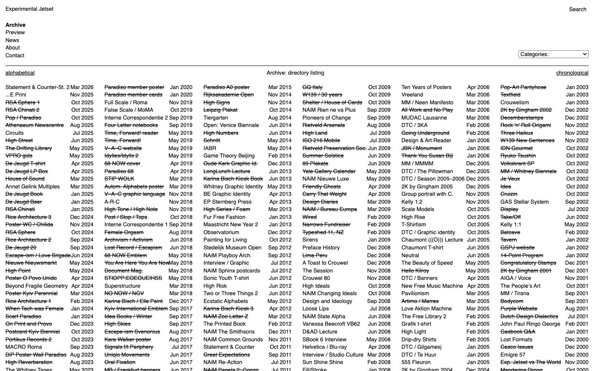

References / Website / 29
Experimental Jetset website
The Amsterdam studio’s online archive: a directory listing of every project, set in one size of Helvetica on a six-column grid.
- Source
- jetset.nl
- Creator
- Experimental Jetset
- Style
- International Typographic Style (agent-proposed, not yet reviewed by a person)
- Moods
- Rational, dense, plain
- Evidence
- Captured with
tools/capture.mjs(headless Chrome, 1440 × 900) on 25 September 2026 and inspected. The screenshot shows the first viewport; the measurement covers up to four screens. - Reviewed
- Rights
- Third-party work, stored with credit for commentary. License: unverified. Rights policy
Observed
- A plain text header reads “Experimental Jetset” at the top left and “Search” at the top right.
- A short vertical menu lists Archive (in bold), Preview, News, About, and Contact.
- A thin black rule spans the page under the menu and a Categories drop-down.
- Below the rule, six equal columns list project titles, each with a month and year aligned to the right of the column.
- Many titles are struck through. All text is black on white and appears to be the same size.
Why it belongs
The measurement finds only Helvetica, only black and white, square corners, and no centered text. Every text run is 13.2 px, so the size range is 1.
The grid carries the whole page: the directory reads as a table because the columns are strict, not because of rules or boxes.
Borrow
Let a long list become the layout: equal columns, one type size, and dates aligned to a fixed column edge.
Measured
Machine-extracted by tools/extract-traits.js on . Full measurement.
- Type families
- Helvetica (100%)
- Median radius
- 0 px
- Mean chroma
- 0
- Palette
- #ffffff 83%
- #000000 17%

